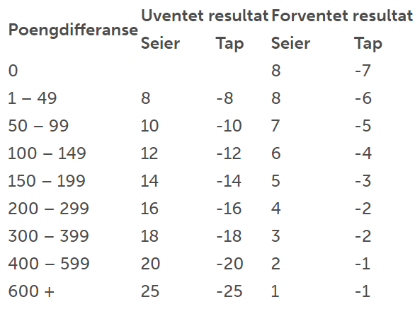

Når man begynner å spille turneringer må man kjøpe en spiller lisens for å registreres i NBTF (Norges Bordtennisforbund).
I tillegg til å kunne konkurerre vil du få en ranking.
Når man begynner å spille turneringer må man kjøpe en spiller lisens for å registreres i NBTF (Norges Bordtennisforbund).
I tillegg til å kunne konkurerre vil du få en ranking.
Rankingsystemet ligner mye på ELO systemer brukt i f.eks sjakk. Man har en andel poeng, og basert på
poeng differansen mellom den som vinner og den som taper får man eller mister man en andel poeng. Hvis du vinner mot noen mye lavere ranking enn deg får du ikke mange poeng, men hvis du slår noen mye høyere ranket enn deg får du masse poeng.
Systemet fungerer på samme måte hvis du taper. Hvis du taper mot noen mye høyere ranket enn deg taper du få poeng, men hvis du taper mot noen mye lavere ranket enn deg taper du mye poeng. Se tabell til høyre.
Eksempel: Tormod (2972 poeng) og Egil (2790 poeng) møtes i en turnering. Poengdifferansen mellom Eskil og Lars (2972 - 2790) = 182 poeng.
Hvis Egil vinner vil det være et uventet resultat. Ser vi på tabellen finner vi ut at han vil få 14 poeng, mens Tormod taper 14 poeng.
Hvis Tormod vinnerm vil det være et forventet resultat. Ser vi på tabellen finner vi ut at Tormod vil da få 5 poeng, mens Egil taper 3 poeng.